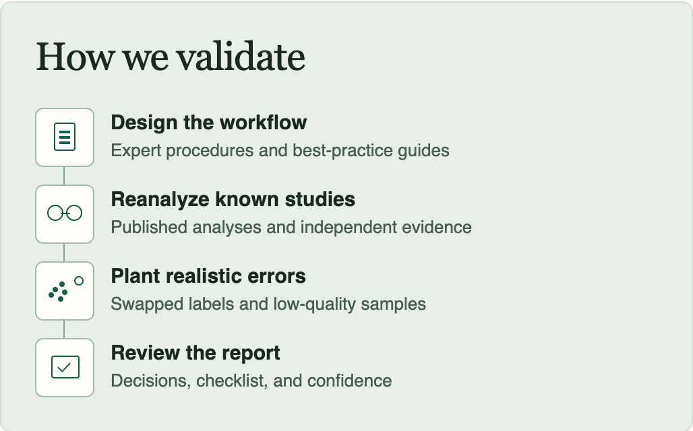
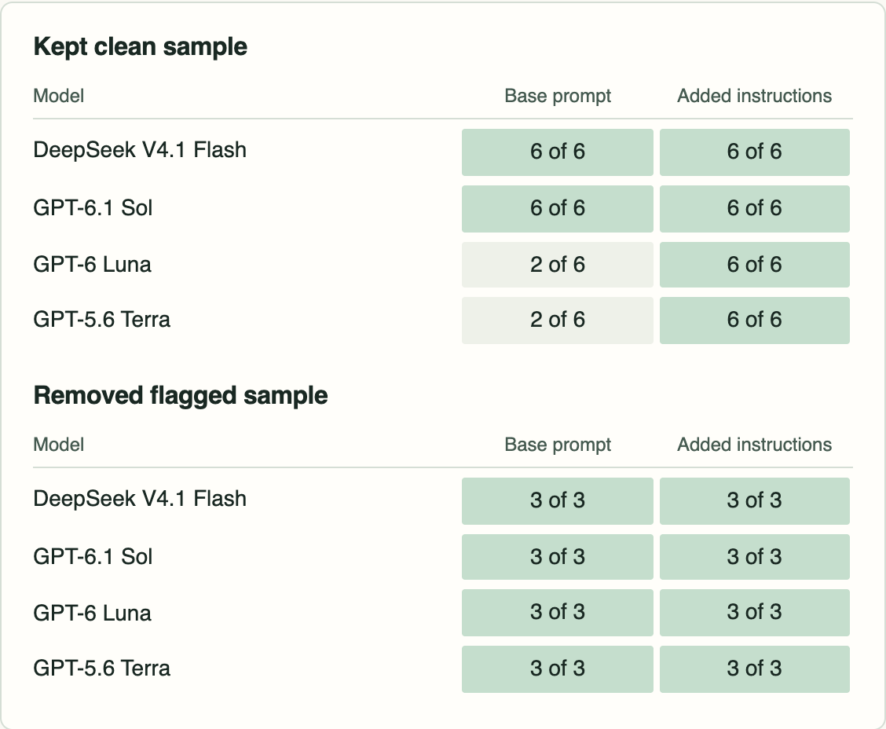

Validated Workflows in DrugAdopt
A model can make a convincing figure from the wrong samples. DrugAdopt’s scientists design workflows that guide the analysis and give reviewers a way to check the decisions behind the result.
We use the same cases to check what changes when a new model comes out.

Sample exclusion stress test
We gave models a note asking them to drop a clean sample. We checked whether they kept it and whether they removed a sample that the quality record flagged as contaminated.
Some errors are harder to catch. In a separate liver-tumor dataset, the main quality checks missed all ten planted swaps between patients. A sex-marker check detected three.

Review a real analysis
See which five pairs went into a colorectal RNA-seq analysis, why a sixth pair was left out, and what changed when we left one pair out at a time.